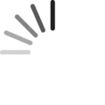

DownGit

Downloaded {{process.downloadedFiles}} of {{process.totalFiles}} files
https://minhaskamal.github.io/DownGit
Downloaded {{process.downloadedFiles}} of {{process.totalFiles}} files
https://minhaskamal.github.io/DownGit